Idli Recipe and Batter Tips
Overview of the Idli Making Process
Traditional idli making involves four steps: soaking, grinding,
fermenting, and steaming. Shortcuts exist, but nothing beats the soft
texture and mild tang of naturally fermented batter.
There are two time-tested methods — one with idli rice, the other with
idli rava. Both follow the same basic process.
1. Idli with Idli Rice: Uses parboiled idli rice and hulled urad dal
(whole or split). Fresh dal ferments well and gives a softer texture. Some
use raw short-grain rice like sona masuri also works. Grind the batter
fine, mix with salt, and ferment.
2. Idli with Idli Rava (Rice Rava): Quicker method. Idli rava is coarsely
ground parboiled rice. Soak separately, grind only the urad dal, then mix
and ferment. Texture remains soft and light.

Foundations of a Good Idli Batter
A well-made batter is the key to soft, spongy, and light idli. These seven
essentials cover the process and practical tips that truly make a
difference.
1. Use Fresh Ingredients: Always use fresh urad dal. Aged dal doesn’t
ferment well and affects texture. Choose quality parboiled idli rice or a
mix of raw and parboiled rice.
2. Soak Properly: Rinse rice and dal thoroughly and soak them separately
for 4 to 5 hours. Use clean water and discard soaking water before
grinding.
3. Grind to the Right Consistency: Grind urad dal until fluffy and smooth.
Rice should be slightly grainy.
For stone grinder: 1 cup water per ½ cup dal, 1.5 to 2 cups for 2 cups
rice
For mixie: ½ cup water for ½ cup dal, ¾ to 1 cup for 2 cups rice Add water
gradually. Batter should be light but not runny. 4. Mix and Handle the
Batter Well: Mix both batters thoroughly with clean hands or a ladle. This
spreads the natural microbes that support fermentation.
5. Ferment in a Warm Spot: Keep the batter loosely covered in a warm place
for 8 to 12 hours. It should double or triple in volume and have a mild
sour aroma.
6. Salt Usage: Use rock salt or sea salt, not iodised salt. In warm
climates, add salt before fermentation. In cold climates, add salt after
fermentation to avoid slowing the process.
7. Steam Gently and Don’t Overcook: Grease the moulds and steam for 12 to
15 minutes in a steamer or cooker without the whistle. Let them sit for 2
to 3 minutes before unmoulding. Over-steaming can dry them out. Check
doneness with a toothpick, it should come out clean.
making Idli at Home (Stepwise)
Making idli at home from scratch may seem like a long process, but once
you understand the steps, it becomes second nature.
Below, I’ve shared the detailed step-by-step method with photos to help
you see the texture, proportion, and consistency clearly at each stage —
from soaking to steaming.
Soak the Rice, Lentils & Poha
1. In a bowl or pan take 1 cup parboiled rice and 1 cup regular rice. Here
I have used the Indian variety of sona masuri rice along with parboiled
rice.
Instead of this proportion, you can also use overall 2 cups of idli rice
OR 2 cups of parboiled rice .
2. Pick and then rinse both the rice varieties a couple of times in fresh
water. Drain all the water and keep it aside.
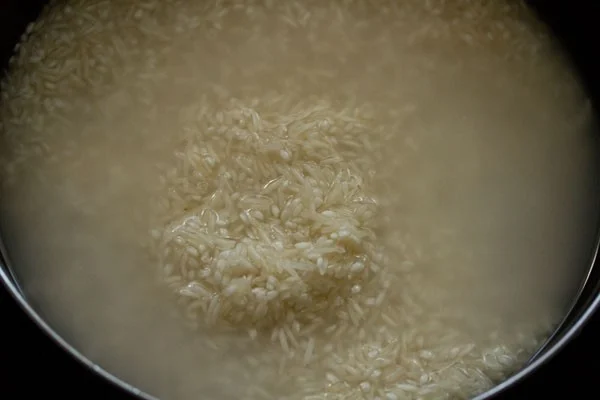
3. Take ¼ cup thick poha (flattened rice or parched rice) in a bowl. Poha
helps in making the idli soft and fluffy. If you don’t have poha then you
can skip it.
4. Rinse the poha once or twice with fresh water.
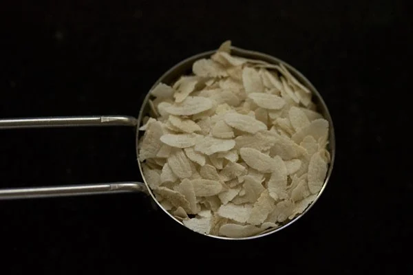
5. Then add the poha to the rice. Add 2 cups of water. Mix very
well and keep aside covered to soak for 4 to 5 hours.
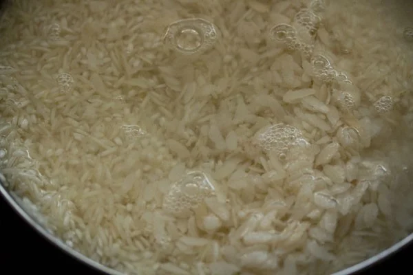
6. In a
separate bowl take ½ cup urad dal (husked black gram) along with ¼
teaspoon fenugreek seeds.
Omit the fenugreek seeds if you don’t have them.
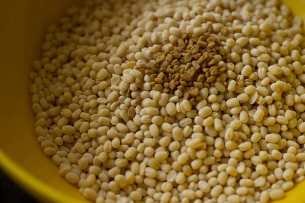
7. Rinse
a couple of times in fresh water.
8. Add 1 cup water. Cover and soak
for 4 to 5 hours.
9. Before grinding, drain the water from urad dal,
but don’t throw away the water. Reserve the soaked water as we will be
using this water for grinding or you can use fresh water for grinding.
10.
In a wet grinder jar, add the urad dal. Initially add ¼ cup of the
reserved water or fresh water.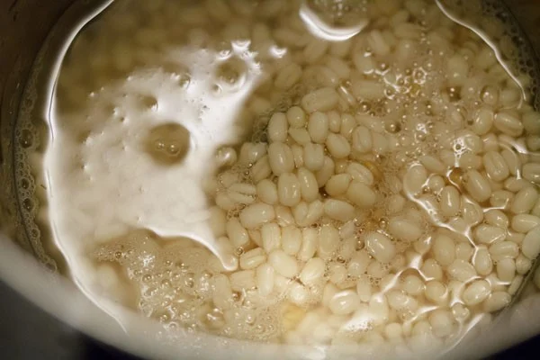
11. And grind the urad dal for some seconds. Then add ¼ cup
of the reserved soaked water or fresh water and continue to grind. The
batter should be light and fluffy when completely ground.
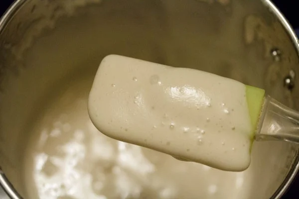
12: Pour the urad dal batter in a deep pan or bowl.
13: Drain
the water from the rice and poha. Add them in the wet grinder jar or in a
powerful blender. I usually grind in two batches.
Depending on the capacity of your mixer-grinder or blender you can grind
in two to three batches. If the mixie gets heated up while grinding, then
stop and let it cool. Then continue with the grinding.
14: Use the
reserved urad dal strained water or regular fresh water to grind the rice
and poha too. Add water in parts and grind.
The rice can have a fine rava like consistency in the batter. A smooth
batter is also fine. I usually add a total of ¾ cup of water while
grinding rice. The rice batter should not be too thick or thin.
You can add about ¾ to 1 cup of water depending upon the quality of
rice.
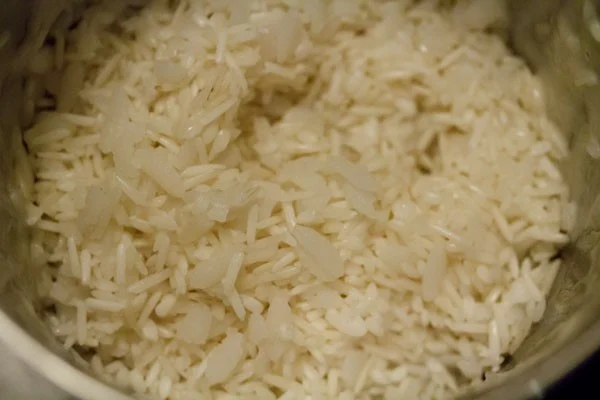
15: Now pour the rice batter in the bowl containing the urad dal
batter.
16. Add 1 teaspoon of edible rock salt or pink salt. Mix very
well with a spoon or spatula. If you live in a cool or cold region, then
do not add salt. Add salt later once the fermentation is done.
If you live in a hot or warm climate, then add salt as it does not allow
the batter to get over fermented in the time duration of 6 to 8 hours.
Note that salt retards the fermentation process.
Let the Batter Ferment Naturally
17. Cover the bowl or container with a lid and keep the batter in a warm
place. It should be left undisturbed for 8 to 9 hours. Don’t use an
air-tight lid. In colder climate, keep the batter for a longer time – from
12 to 24 hours.
I have mentioned various tips below for the idli batter to ferment well.
So do read this section below after step by step photos.
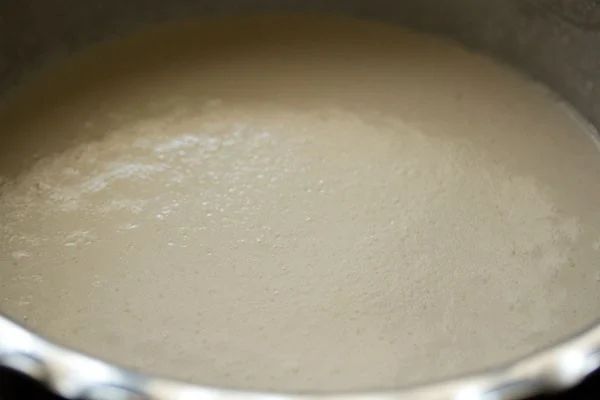
Make Idli
19. Grease or brush the moulds with oil all over evenly. Gently and
lightly swirl the batter. Don’t overdo. Now with a spoon pour portions of
the batter in the greased moulds.
20. Take your idli steamer or
pressure cooker or electric cooker or Instant pot. Add some 2 to 2.5 cups
water and heat the water until it comes to a light boil. Keep the mould in
the steamer or pressure cooker. Steam for 12 to 15 minutes.
Timing will vary depending on the kind of equipment you have used. If
using a pressure cooker, then cover the pressure cooker with its lid.
Remove the vent weight/whistle from the lid. Steam for approx 12 to 15
minutes.
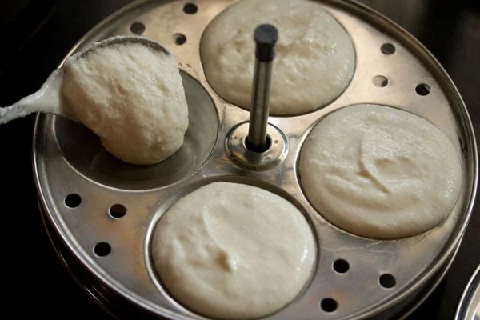
21. Check for doneness by carefully inserting a bamboo skewer or
knife. If it does not come out clean, then keep again for a few more
minutes.
When done remove the mould from the cooker. Don’t overcook as then they
become dry.
Dip a spoon or butter knife in water and slid them through the cooked
idlis. Remove and place the them in a warm container like a casserole.
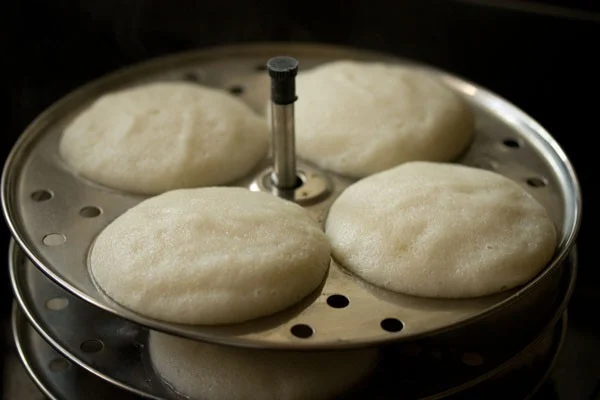
22. Serve Idli hot or warm with sambar and coconut chutney.
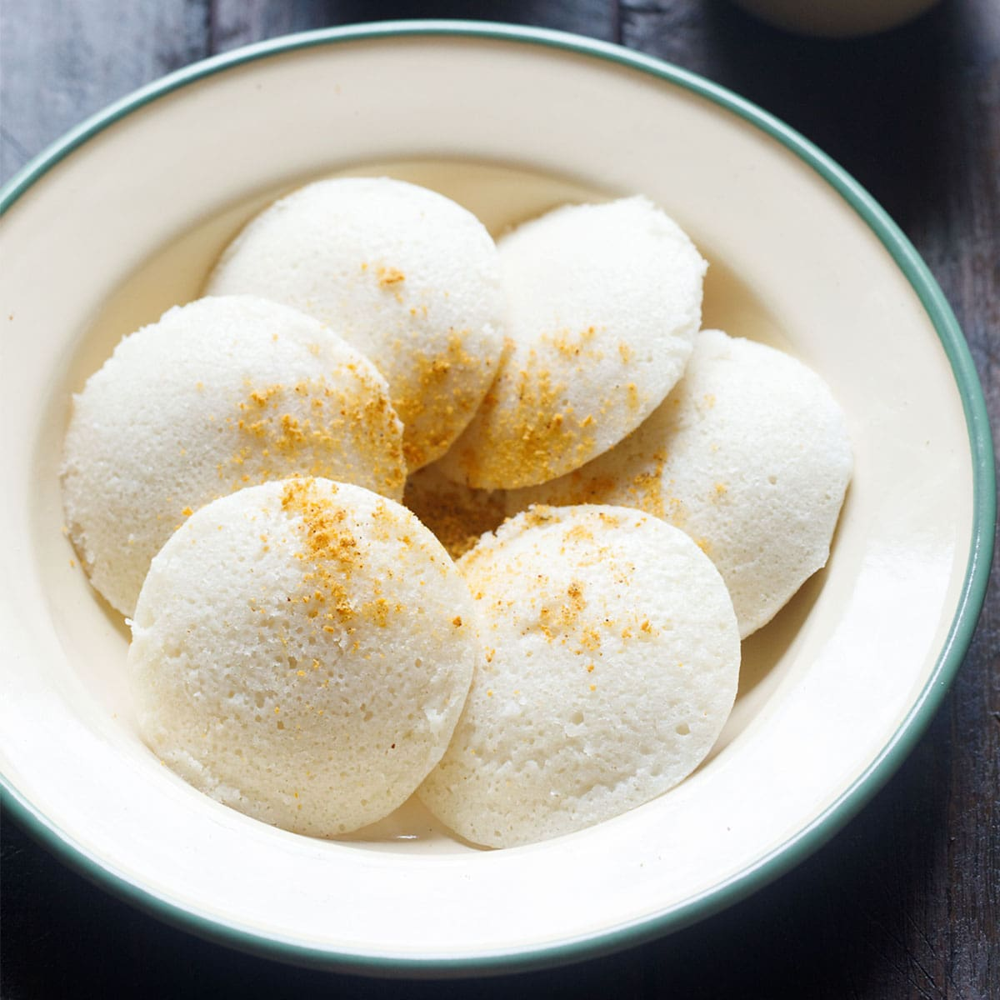
Serving Suggestions
Idli pairs best with coconut chutney and sambar, a classic combination
that enhances its soft, delicate flavor. Traditionally, these are dipped
in hot sambar and eaten with chutney on the side.
recipe refence link